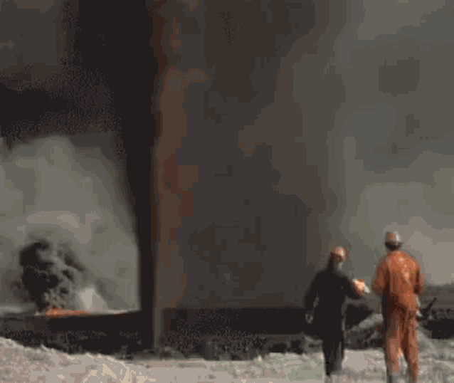
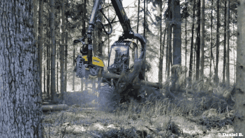
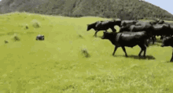
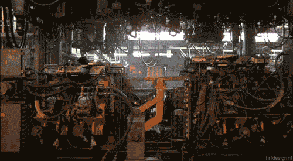

Глобальное потепление — это постепенное, длительное повышение средней температуры воздуха у поверхности Земли.
Оно связано с усилением парникового эффекта, при котором часть солнечного тепла, отражаемого планетой,
задерживается в атмосфере парниковыми газами и не уходит обратно в космос. Это естественный процесс,
который обеспечивает на Земле условия, пригодные для жизни. Но когда концентрация парниковых газов растёт,
атмосфера удерживает больше тепла, чем необходимо, из-за чего постепенно повышается глобальная
температура и меняется климат.
Насколько проблема глобального потепления серьезна, и касается ли она нас?
Насколько она серьёзна? С научной точки зрения — да, это одна из самых серьёзных угроз XXI века.
Подавляющее большинство климатологов сходятся: главная причина — деятельность человека.
Сжигание ископаемого топлива (уголь, нефть, газ) для энергии, промышленности,
транспорта приводит к выбросу парниковых газов (CO₂, метан, закись азота).
Эти газы создают в атмосфере «одеяло», которое не даёт теплу уходить в космос — планета нагревается.
Что провоцирует глобальное потепление?
Причины глобального потепления можно разделить на две большие группы:
естественные и антропогенные (связанные с деятельностью человека).
Большинство климатологов сходятся во мнении,
что именно антропогенные факторы сейчас играют главную роль.
Естественные причины
Солнечная активность. Излучение Солнца меняется в циклах
(примерно каждые 11 лет). В периоды пика увеличивается число вспышек и пятен,
немного растёт уровень излучения.
Вулканическая деятельность.
Крупные извержения выбрасывают в атмосферу частицы,
которые отражают солнечный свет и могут временно охлаждать планету.
Движение литосферных плит влияет на распределение суши и океана,
а значит, и на климатические условия.
Океанские течения. Они играют важную роль
в распределении тепла по планете.
Антропогенные причины
Сжигание ископаемого топлива.Уголь, нефть и газ
используются для производства электроэнергии, работы транспорта и промышленности.
При их сгорании в атмосферу попадает углекислый газ (CO₂) и другие парниковые газы.

Вырубка лесов. Деревья поглощают CO₂ в процессе фотосинтеза.
Когда лес вырубают или он погибает, накопленный углерод высвобождается,
а способность планеты «улавливать» новый CO₂ снижается. Кроме того,
обезлесение нарушает локальные климатические процессы.

Сельское хозяйство и животноводство.
Навоз и продукты жизнедеятельности скота выделяют метан (CH₄),
который гораздо мощнее по воздействию на потепление, чем CO₂. Закись азота (N₂O)
образуется при использовании азотных удобрений.

Промышленные процессы.Навоз и продукты
жизнедеятельности скота выделяют метан (CH₄), который гораздо мощнее по воздействию
на потепление, чем CO₂. Закись азота (N₂O) образуется при использовании азотных удобрений.

Аэрозоли и сажа.При неполном сгорании топлива
в атмосферу попадают твёрдые частицы. Сажа, оседая на снегу и льду,
снижает их отражательную способность, из-за чего поверхность нагревается быстрее.
Как мы можем сдерживать глобальное потепление?
Сдерживание глобального потепления требует скоординированных усилий на всех уровнях
— от международных соглашений до личных привычек. Я подобрала основные направления,
которые помогают снизить концентрацию парниковых газов в атмосфере.
Международные соглашения
Ключевую роль играют глобальные договорённости, прежде всего Парижское соглашение.
Его цель — удержать рост глобальной средней температуры значительно ниже 2 °C
и приложить усилия для ограничения потепления до 1,5 °C по сравнению с доиндустриальным уровнем.
Страны-участницы ежегодно обновляют свои определяемые на национальном уровне вклады (ОНУВ) —
планы по сокращению выбросов.
Технологические решения
Снижение выбросов парниковых газов:
Переход на возобновляемую энергетику.
Активное развитие солнечной, ветровой, гидро- и геотермальной энергетики
вместо сжигания ископаемого топлива.
Энергоэффективность.
Модернизация зданий, внедрение энергосберегающих технологий в промышленности и быту.
Улавливание и хранение углерода (CCS).
Технологии позволяют отделять CO₂ от промышленных и энергетических выбросов,
транспортировать их и изолировать под землёй. Развивается и
биоэнергетика со связыванием углерода (BECCS):
биомасса сжигается для получения энергии, при этом растения поглощают CO₂ при росте.
Развитие «зелёного» транспорта.
Массовый переход на электромобили, улучшение инфраструктуры для них,
использование общественного транспорта и велосипедов.
Удаление углерода из атмосферы:
Прямое улавливание воздуха (DAC).
Специальные установки фильтруют атмосферный воздух, извлекая CO₂
независимо от расположения источников.
Сохранение и восстановление лесов.
Лесовосстановление и защита существующих лесов, которые поглощают CO₂ в процессе фотосинтеза.
Улучшение управления почвами.
Отказ от практик с частым перепахиванием, использование биоугля (древесного угля)
для долгосрочного связывания углерода в почве.
Изменения в сельском хозяйстве
Переход на более устойчивые методы:
Сокращение использования азотных удобрений и переход на органические.
Внедрение технологий для снижения выбросов метана в животноводстве.
Сохранение лесов и восстановление деградированных земель.
Действия на уровне каждого человека
Даже небольшие изменения в повседневной жизни вносят вклад: